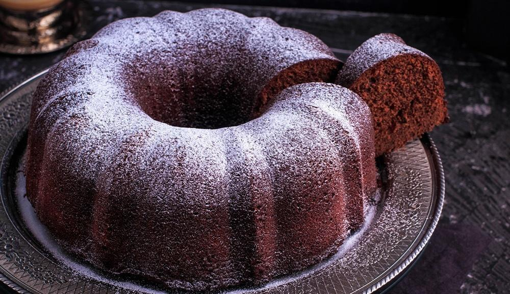
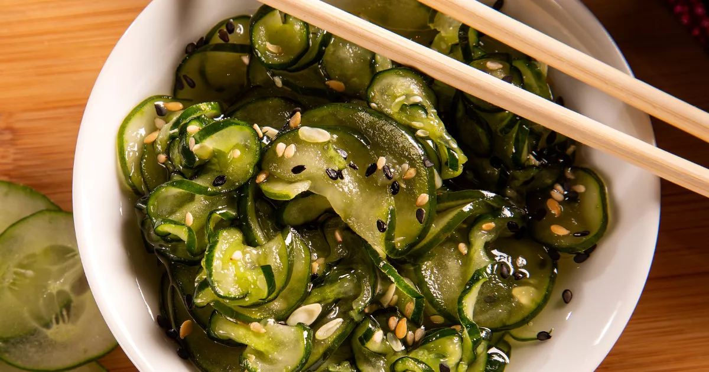

Arroz de couve Flor
- Arroz
- Couve flor
- Cebola média
- Azeite
Deixe a couve flor picada. Adicione ingredientes e refogue bem. Adicione sal, tampe a panela e deixe cozinhar.

Bolo de Café
- Farinha de trigo
- Açúcar
- Café coado
- Chocolate em pó
- Ovos
Bata o açúcar, as gemas e o café. Adicione farinha e chocolate e mexa bem. Bata as claras e junte à mistura.

Sunomono
- Pepinos Japones
- Colher (chá) de sal
- Colher (sopa) de açúcar branco
- Colher (chá) de molho de soja
- Colher (chá) de sementes de gergelim brancas e pretas
Em um recipiente, coloque as fatias de pepino e o sal, misture e deixe descansar por cerca de 5 minutos. Esprema a água dos pepinos. Em um recipiente, misture o vinagre de arroz, o açúcar e o molho de soja até que o açúcar se dissolva. Adicione a mistura de vinagre e as sementes de gergelim às fatias de pepino e misture bem. Sirva.